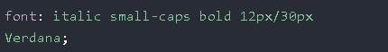
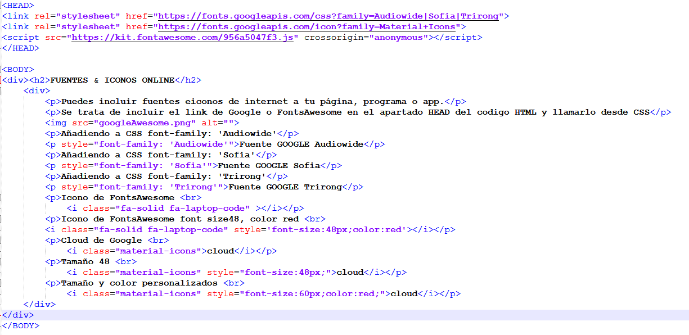
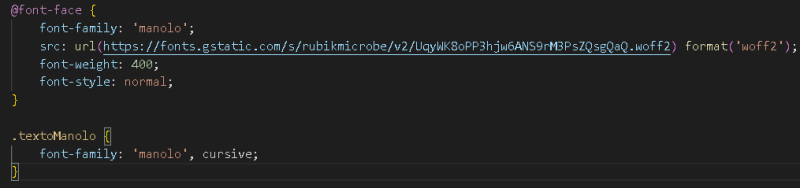

La propiedad font permite establecer de una sola vez los valores para todas las propiedades en una hoja de estilo.
SINTAXIS font: font-style font-variant font-weight font-size/line-height font-family
La propiedad font-style se utiliza principalmente para especificar texto en cursiva.
normal - font-style: normal
cursiva - font-style: italic
oblicua - font-style: oblique;
La propiedad font-variant se utiliza principalmente para convertir en pequeñas mayúsculas las minúsculas.
NORMAL - font-variant: normal
mayusculas PEQUEÑAS en lugar de minúsculas - font-variant: small-caps
La propiedad font-weight se utiliza principalmente para especificar el grosor del texto.
Algunas fuentes tan solo tiene 2 grosores: Arial, Verdana...
Otras pueden ajustarse desde 100 a 900
100 de 900
500 de 900
900 de 900
Como ha indicado Juan, el tamaño de letra se puede indicar como px, %, em, rem, vh, vw...
font-size:26px
font-size:250%
font-size:2em
font-size:2rem
font-size:2vh
font-size:2vw
También se indica una medida en px, %, em, rem, vh, vw...
line-height:26px
line-height:250%
line-height:2em
line-height:2rem
line-height:2vh
line-height:2vw
Las fuentes web seguras son fuentes que se instalan universalmente en todos los navegadores y dispositivos. Existe la posibilidad de que no se encuentre una fuente o no se instale correctamente. Es muy importante utilizar siempre fuentes alternativas.Siempre finalice la lista con un nombre de familia de fuente genérico.
p { font-family: Tahoma, Verdana, sans-serif;}
Puedes incluir fuentes e iconos de internet a tu página, programa o app.
Se trata de incluir el link de Google o FontsAwesome en el apartado HEAD del codigo HTML y llamarlo desde CSS
Añadiendo a CSS font-family: 'Audiowide'
Fuente GOOGLE Audiowide
Añadiendo a CSS font-family: 'Sofia'
Fuente GOOGLE Sofia
Añadiendo a CSS font-family: 'Trirong'
Fuente GOOGLE Trirong
Icono de FontsAwesome
Icono de FontsAwesome font size48, color red
Cloud de Google
cloud
Tamaño 48
cloud
Tamaño y color personalizados
cloud
Puedes crear "tu propia fuente"
Estas letras se mostrarán en la fuente "manolo"